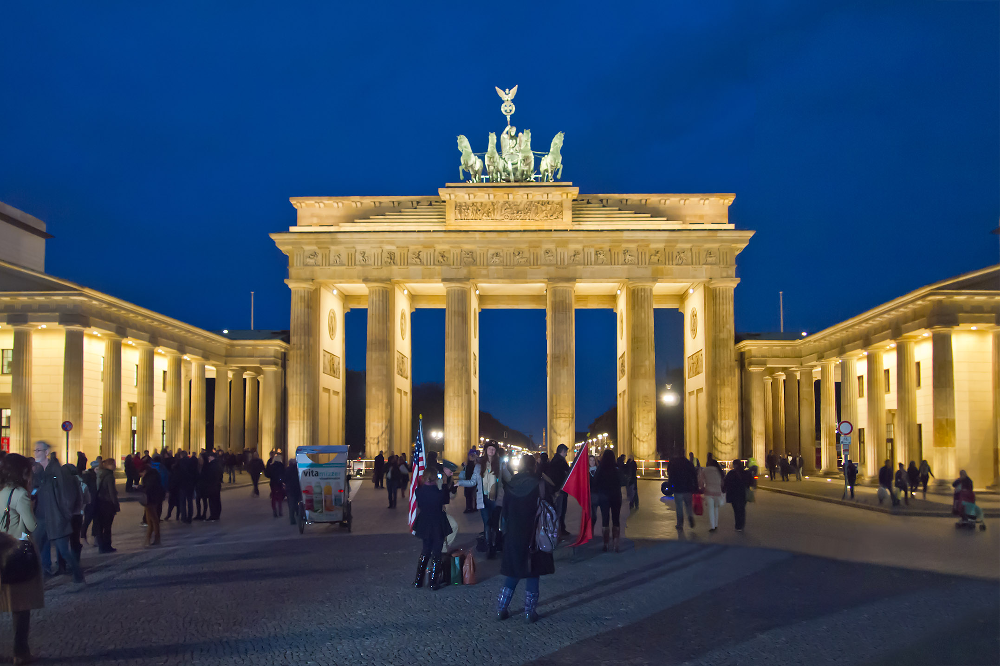
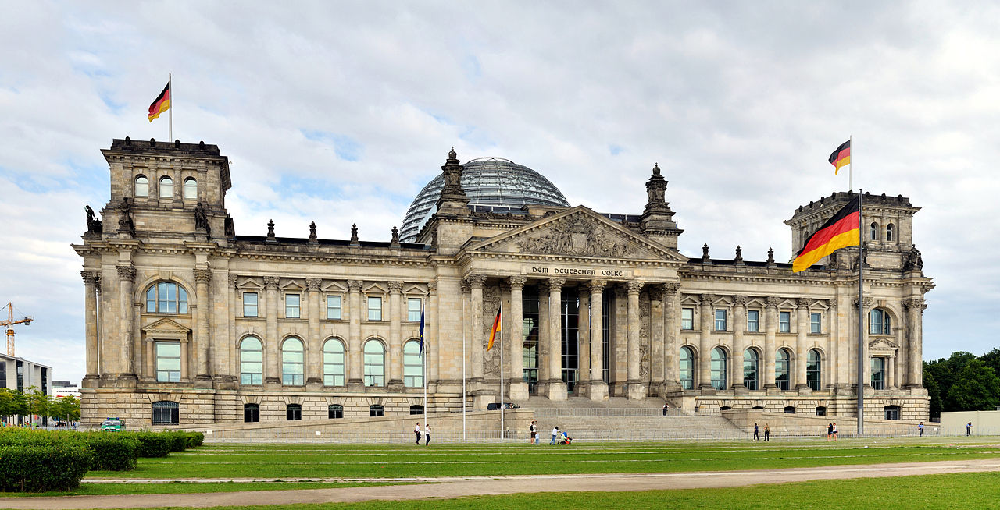

Berlin
In January 2019, I went to Berlin as part of the UCC Entrepreneur and Social Societies Winter Break Tour. 100 UCC students went to Berlin for the weekend with the majority of the group not knowing where we were going until we were on the bus up to Dublin Airport. We did a lot in our three days there such as visiting the Berlin Wall, Checkpoint Charlie, the Brandenburg Gate and the Topography of Terror.
Plus Berlin is the hostel we stayed in while in Berlin.

This is a photo of the Brandenburg Gate in Berlin.

The Reichstag is the home of politics in Germany.
Dubai
During Summer 2013, I went to Dubai on a holiday with my family. We went to the Burj Khalifa the worlds largest building. As well as that we went dune buggying which was wild, one of my favourite moments of the trip.